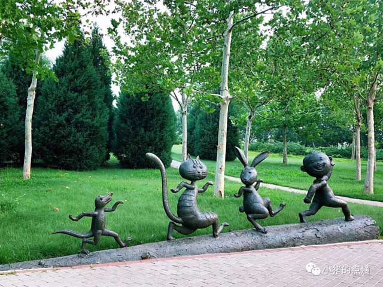
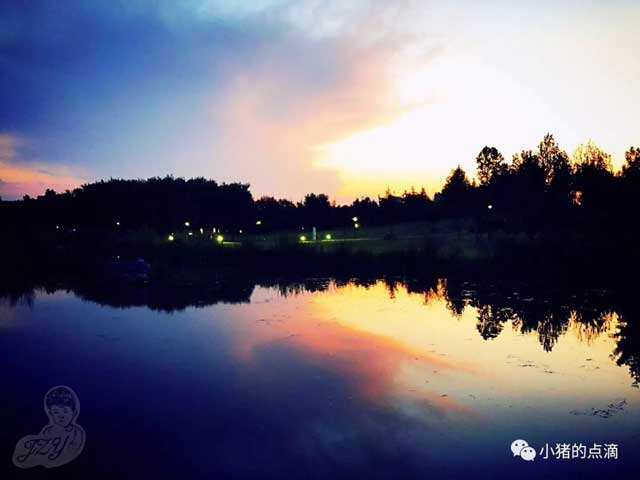
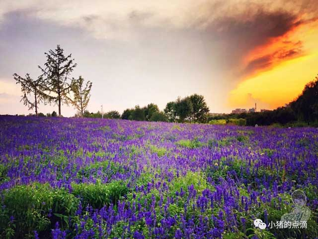
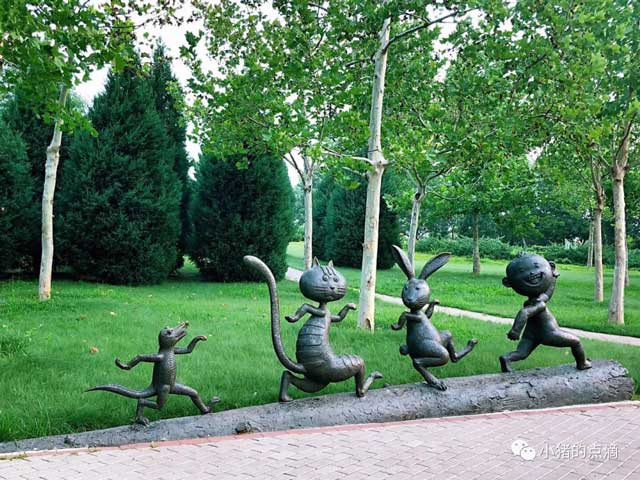
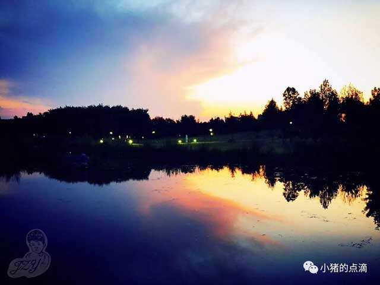
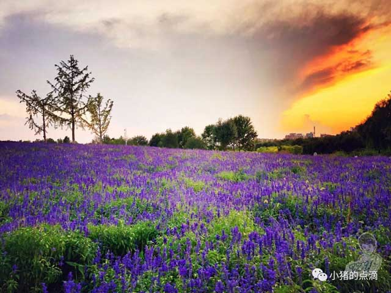

article
長陽公園は、房山区長陽町にあります。北京で建設中の11万エーカーの新しい公園の1つです。最大の陸地、地理的な場所、最も完全な緑化樹種、および最も完全なインフラストラクチャを備えた公園です。
庭園では、人工の風景と元の生態学的な風景が組み合わさって、カラフルな園芸植物のコミュニティを形成し、都市の森の風景を作り出し、市民がリラックス、レクリエーション、フィットネスするのに理想的な場所を提供します。この庭園は、2013年に北京庭園を受賞しました緑化局は市の「質の高い公園」として評価されました。共植：53550本の木、19920本の灌木、717952年生の花、105743 105芝生、668914㎡地被。
 




